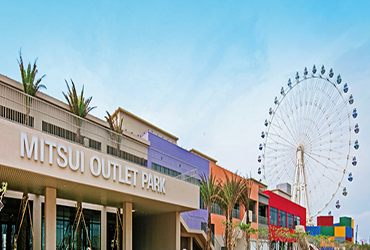

三井 OUTLET PARK
posted by wang2383 February 2021
位於台灣台中市梧棲區的購物中心，佔地很廣，停車方便，旁邊是台中港服務中心和碼頭，晚上夜景不錯。商店大部分是連鎖的，有一定的品質，但是餐飲稍微偏貴。平常日顧客不多。
臺中這樣玩，3天2夜精選，走過路過不要錯過，跟著我們一起出發吧!
走向世界冒險，回到內心流浪的旅人，日夜努力拾起歲月，奔騰在藝術與文字間的川流，在路上擦撞出生命最美好的時刻。
「每一趟旅程，都是華麗的冒險。」「跨出舒適圈，遇見更勇敢的自己。」
《旅創浪人 Life Show》
「每一趟旅程，都是華麗的冒險。」「跨出舒適圈，遇見更勇敢的自己。」
《旅創浪人 Life Show》
🇭🇰 нσηgкιε🇦🇺 мεℓвσυяηε·📍
長駐澳洲港人，
分享當地美食活動，穩世景點
💃🏼👙🌊🍽🍺🏂🏊🏼♀️🎧🎯✈️
🎞🎬🎥🎧🎤
喜歡旅遊，拍攝；
四周圍去打卡，
發掘一些好拍照的地方
與大家分享。
YouTube: 彤記TUNGKee
IG: Tungggggggggg
超喜歡去旅行❤️
曾經辭職享受了1年的gap year，最後更踏上工作假期之路！
在2年的英國工作假期裡，
一邊全職工作一邊去了19個歐洲國家！
雖然我的英國工作假期已經完結，但是旅行還是會繼續，
希望可以發掘更多趣事，然後與大家分享。
YouTube: York Pau
IG: york.york.freestyle
_traveler
從來都沒有對與錯，
只有適不適合。
尋找舒適的生活方式，
記錄自己曾經的過去，
分享心中的感受。
HI！ 我係蕃薯妹，
有時傻下傻下，做野笨手笨腳,
同時又鐘意食蕃薯，
所以叫蕃薯妹，夠哂貼切～！
YouTube: Sweet_
Potato_Mui蕃薯妹
IG: sweet_potato_mui
我是莎朗，是典型的日本控～
我旅行有一個宗旨
⭐不玩重覆路線。⭐
喜歡自己找尋新鮮好玩好吃的～
目前踏足了日本30多個縣，
希望有天可以制霸日本。
除了分享我的日本旅遊點點滴滴，也有其他國家、
香港的旅遊片，
也會分享些生活上實用有趣的東西😊
YouTube: TraveLa 莎朗
IG: travela.hk
「每一趟旅程，都是華麗的冒險。」「跨出舒適圈，遇見更勇敢的自己。」
《旅創浪人 Life Show》
位於台灣台中市梧棲區的購物中心，佔地很廣，停車方便，旁邊是台中港服務中心和碼頭，晚上夜景不錯。商店大部分是連鎖的，有一定的品質，但是餐飲稍微偏貴。平常日顧客不多。